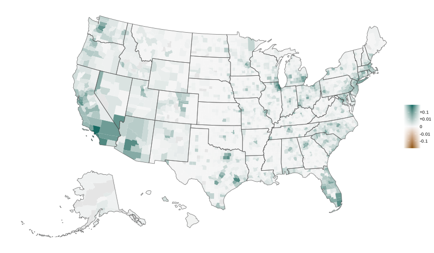

50 ways to integrate banking
| Canada | Germany | US | |
|---|---|---|---|
| Number of banks | ≈ 88 banks | ≈ 1,360 credit institutions | ≈ 4,600 banks |
| Local banking footprint (asset share) | ≈ 6% outside Big-6 | ≈ 25.6% at savings + cooperative banks | ≈ 11.3% at community banks |
|
Interbank lending (loans to banks / total assets) |
Low | ≈ 20.6% | ≈ 1.8% |
System adjusts by:
- Intra-bank reallocation (portfolio shifts)
- Interbank reallocation (leverage / balance sheet)
- A mix — determined by the network
Research question
Multi-market banks adjust through two margins:
- Internal — portfolio reallocation (information frictions)
- External — leverage / interbank (financial frictions)
$\Longrightarrow$ Goal: a tractable model where spatial heterogeneity in lending opportunities is addressed by both, and their interaction.
Result preview:
- Different integration structures deliver the same efficiency in normal times, but respond very differently to shocks
- The co-lending network — which banks lend where — determines the response to local shocks
- Fragility is directional: the same shock can be absorbed or amplified, depending on where it hits the network and which friction dominates
Related literature
Financial Integration
- Morgan, Rime, Strahan (2004)
- D'Amico & Alekseev (2025)
- Bau & Matray (2023)
- Quincy & Xu (2025)
Contribution: integration as a structured object — which structures are fragile?
Financial Networks
- Allen & Gale (2000)
- Acemoglu, Ozdaglar, Tahbaz-Salehi (2015)
- Elliott, Golub, Jackson (2014)
- Greenwood, Landier, Thesmar (2014)
Contribution: contagion via lending reallocation, not defaults or fire sales
Internal Capital Markets
- Cortés & Strahan (2017)
- Gilje, Loutskina, Strahan (2016)
- Berrospide, Black, Keeton (2016)
- Kundu, Park, Vats (2021)
Contribution: theory language explaining empirics + allowing aggregation
Spatial Banking
- Maingi (2024)
- Oberfield, Rossi-Hansberg et al. (2024)
- Aguirregabiria, Clark, Wang (2025)
Contribution: focus on lending and not deposit — interbank market
Distance & Specialization
- Casado & Martinez-Miera (2024)
- Adams, Brevoort, Driscoll (2023)
- Granja, Leuz, Rajan (2022)
- Blickle, Parlatore, Saunders (2023)
Contribution: aggregate implications of specialization — geographic concentration shapes systemic risk
The model
Environment: $L$ locations, $N$ banks. Discrete time, no risk.
Definition (Dynamic Equilibrium)
Given $\bar{W}^0$ and parameters $(A, B, \gamma, \lambda)$, a dynamic equilibrium is a sequence $\{\omega^t, \theta^t, \mu^t, r^t\}$ such that:
- Banks optimize (problem above)
- $\sum_h B_h \theta_h \omega_{hx} = A_x - \mu_x \;\;\forall x$ (capital clears)
- $\sum_h B_h(\theta_h - 1) = 0$ (bond clears)
- $\bar{W}^{t+1} = \omega^t$ (state transition)
Solving the bank problem
Portfolio (internal margin)
$$\omega_{hx}^* = \frac{\bar{W}_{hx}\, \Phi_x}{Z_h}$$- $\Phi_x = \exp(\tilde{\mu}_x / \gamma)$: yield-chasing factor
- $Z_h = \sum_x \bar{W}_{hx}\, \Phi_x$: portfolio normalizer
- Portfolio value: $V_h = \gamma \log Z_h$
Leverage (external margin)
$$\theta_h = 1 + V_h / \lambda$$- $V_h$ links the two margins: same yield-chasing factors tilt portfolios and determine borrowing
| Notation | Formula | Model interpretation | Asset pricing equivalent |
|---|---|---|---|
| $\Phi_x$ | $\exp(\tilde{\mu}_x / \gamma)$ | Yield-chasing factor | State price / Arrow-Debreu |
| $\bar{W}_h$ | row-stochastic, given | Local expertise | Pricing kernel / SDF |
| $Z_h$ | $\sum_x \bar{W}_{hx}\,\Phi_x$ | Portfolio normalizer | Price of bank $h$'s portfolio |
| $V_h$ | $\gamma \log Z_h$ | Portfolio value | Expected excess return |
Equilibrium in \(\Phi\)
Equilibrium characterization — fixed point in $\Phi$
Capital:
$\underbrace{\sum_h \overbrace{B_h}^{\text{wealth}} \overbrace{\theta_h(\Phi)}^{\text{leverage}} \overbrace{\bar{W}_{hx}\Phi_x / Z_h}^{\text{portfolio weight}}}_{\text{capital supply at }x} = A_x \underbrace{- r - \gamma \log \Phi_x}_{\text{eff. loan rate }\mu_x}$
Bond:
$\underbrace{\sum_h B_h \frac{1}{\lambda} \overbrace{\gamma \log Z_h}^{V_h\text{ (portfolio value)}}}_{\text{aggregate excess demand for leverage}} = 0$
| Notation | Formula | Model interpretation | Asset pricing equivalent |
|---|---|---|---|
| $\Phi_x$ | $\exp(\tilde{\mu}_x / \gamma)$ | Yield-chasing factor | State price / Arrow-Debreu |
| $\bar{W}_h$ | row-stochastic, given | Local expertise | Pricing kernel / SDF |
| $Z_h$ | $\sum_x \bar{W}_{hx}\,\Phi_x$ | Portfolio normalizer | Price of bank $h$'s portfolio |
| $V_h$ | $\gamma \log Z_h$ | Portfolio value | Expected excess return |
Steady-state theorem
Theorem (Steady States)
The set of deterministic steady states is:
$$\mathcal{S} = \left\{\bar{W} \in \mathbb{R}_{++}^{N \times L} : \bar{W} \text{ row-stochastic}, \; W^\top B = K^{FB}\right\}$$- First best: A planner equalizes marginal returns: $K_x^{FB} = A_x - \mu^{FB}$, where $\mu^{FB} = \frac{1}{L}\sum_x A_x - \frac{1}{L}\sum_h B_h$.
- Efficiency & alignment: every SS achieves first-best. $\Phi^* = \mathbf{1}$, $\theta^* = 1$, $\tilde{\mu} = 0$. Natural capital supply $W^\top B$ matches first-best demand $K^{FB}$ everywhere.
- Multiplicity: $\mathcal{S}$ is convex, dimension $(N-1)(L-1)$ — infinitely many architectures for $N, L \geq 2$.
Question: do all steady states react the same way after a shock?
Linearization & the market matrix
$\Longrightarrow$ Immediate reaction after a small localized misalignment: $A_x \to A_x + \varepsilon_x$
Linearize equilibrium equations
$\sum_h B_h \theta_h(\Phi)\bar{W}_{hx}\Phi_x / Z_h = A_x - r - \gamma \log \Phi_x$
$\big\downarrow$ 1st order, $\Phi=\mathbf{1}$
$\Big[\,{\color{#4A90D9}{\sum_h B_h \bar{W}_{hx}}} + \gamma\Big]\phi_x + {\color{#9B59B6}{\frac{\gamma\!-\!\lambda}{\lambda}}}{\color{#E8830C}{\sum_y \Big(\sum_h B_h\, \bar{W}_{hx}\bar{W}_{hy}\Big) \phi_y}} = \varepsilon_x - \delta r$
$\big\downarrow$ collect terms
$\big({\color{#4A90D9}{K_x^{FB}}}+\gamma\big)\phi_x + {\color{#9B59B6}{\kappa}} {\color{#E8830C}{\sum_y G_{xy}\,\phi_y}} = \varepsilon_x - \delta r$
$\sum_h B_h \frac{\gamma}{\lambda} \log Z_h = 0$
$\big\downarrow$ $\log Z_h \approx (W\phi)_h$
$\sum_x {\color{#4A90D9}{\sum_h B_h\, \bar{W}_{hx}}}\, \phi_x = 0$
$\big\downarrow$
$({\color{#4A90D9}{K^{FB}}})^\top \phi = 0$
$M\phi = \varepsilon -$ $\delta r \cdot \mathbf{1}$ where $M = \tilde{D} + \kappa\, G$
$(K^{FB})^\top \phi = 0$
Today: focus on partial equilibrium $\Longrightarrow\; \delta r = 0$
No-network benchmark
No-network benchmark: suppose $\kappa = 0$.
$\big\downarrow$
$\big\downarrow$
Consequences (no network)
-
Spreads: $\delta\tilde{\mu}_x = (1 - d_x)\,\varepsilon_x$ where $d_x = \dfrac{K_x^{FB}}{K_x^{FB}+\gamma}$
Only shocked locations affected. -
Capital: $\delta K_x = d_x\,\varepsilon_x$
Deep markets ($d_x \approx 1$): absorb via capital. Thin ($d_x \approx 0$): absorb via spreads. -
Portfolios: $\delta\omega_{hx} = \bar{W}_{hx}\!\left(\phi_x - \bar{W}_h \cdot \phi\right)$
Banks rebalance — but net effect cancels at non-shocked $x$. -
Leverage: $\delta\theta_h = \dfrac{\gamma}{\lambda}\,\bar{W}_h \cdot \phi$
Exposed banks lever up; $\delta\Theta = (\gamma/\lambda)\,d \cdot \varepsilon \neq 0$ absorbed externally.
Each location absorbs its own shock. No cross-location transmission.
Why no spillovers at $\kappa = 0$?
Each bank responds on two margins simultaneously:
- Rebalance toward shocked location → withdraws capital from neighbors
- Lever up on all locations → adds capital everywhere proportionally
When $\gamma = \lambda$: equal marginal costs $\Longrightarrow$ the two externalities cancel exactly at every non-shocked location.
$G$ drops out. The network is the channel; friction asymmetry ($\kappa \neq 0$) is the switch.
What if
What if $\kappa \neq 0$?
$\big\downarrow$
$\big\downarrow$
What is $G$?
The Gram matrix \(G\)
$G = W^\top \text{diag}(B_h)\, W$
-
Diagonal: $G_{xx} = \sum_h B_h\, \bar{W}_{hx}^2$
$x$ visibility in banks portfolio. High $G_{xx}$: banks give attention to $x$. -
Off-diagonal: $G_{xy} = \sum_h B_h\, \bar{W}_{hx}\, \bar{W}_{hy}$
Co-lending overlap. High $G_{xy}$: same banks gives attention to $x$ and $y$.
$\bar{W}$ (portfolio weights)
| $A$ | $B$ | $C$ | |
|---|---|---|---|
| $h_1$ | 0.6 | 0.4 | 0 |
| $h_2$ | 0 | 0.5 | 0.5 |
| $h_3$ | 0.5 | 0 | 0.5 |
$G = \bar{W}^\top D_B\, \bar{W}$ (co-lending overlap)
| $A$ | $B$ | $C$ | |
|---|---|---|---|
| $A$ | 2.66 | 1.44 | 0.50 |
| $B$ | 1.44 | 1.96 | 1.00 |
| $C$ | 0.50 | 1.00 | 1.50 |
e.g. $G_{AB} = 6 \times 0.6 \times 0.4 = 1.44$ (only $h_1$ overlaps $A$ and $B$)
$K^{FB} = W^\top B = (4.6,\; 4.4,\; 3.0)$ — market sizes
Decomposing \(G\): second moment = covariance + mean
$G = \underbrace{\operatorname{Cov}_B(\bar{W})}_{\alpha\;\text{(specialization)}} + \underbrace{B_{\text{total}}\,\bar{w}\bar{w}^\top}_{\beta\;\text{(common factor)}}$
Second moment = variance + mean². Same identity, applied to bank portfolios weighted by size.
- $\operatorname{Cov}_B(\bar{W})$ $\equiv \sum_h B_h\,(\bar{W}_h - \bar{w})(\bar{W}_h - \bar{w})^\top$ — weighted by bank size $B_h$, not normalized.
- $\bar{w}$ $\equiv \tfrac{1}{B_{\text{total}}}\sum_h B_h\,\bar{W}_h$ — size-weighted average portfolio.
$\alpha = \operatorname{Cov}_B(\bar{W})$ (bank specialization)
| $A$ | $B$ | $C$ | |
|---|---|---|---|
| $A$ | 0.90 | −0.25 | −0.65 |
| $B$ | −0.25 | 0.35 | −0.10 |
| $C$ | −0.65 | −0.10 | 0.75 |
Negative off-diagonals: $A$–$C$ differentiated (few shared banks). Rows sum to 0.
$\beta = B_{\text{total}}\,\bar{w}\bar{w}^\top$ (rank-1 common factor)
| $A$ | $B$ | $C$ | |
|---|---|---|---|
| $A$ | 1.76 | 1.69 | 1.15 |
| $B$ | 1.69 | 1.61 | 1.10 |
| $C$ | 1.15 | 1.10 | 0.75 |
All entries positive, every row proportional to $\bar{w}$.
$G = \bar{W}^\top D_B\, \bar{W}$
| $A$ | $B$ | $C$ | |
|---|---|---|---|
| $A$ | 2.66 | 1.44 | 0.50 |
| $B$ | 1.44 | 1.96 | 1.00 |
| $C$ | 0.50 | 1.00 | 1.50 |
Colending example
Sequoyah County, OK
Kern County, CA
Leontief cascade
$\big\downarrow$
$\big\downarrow$
$\big\downarrow$ factor
$\big\downarrow$ Neumann series
Cascade interpretation
-
Round 0: $\tilde{D}^{-1}\varepsilon$
Local absorption — each market absorbs its own shock (= benchmark). -
Round 1: $-\kappa\,\tilde{D}^{-1}G\;\tilde{D}^{-1}\varepsilon$
One-hop spillover: rebalancing spills capital to co-lent neighbors. - $\vdots$
-
Round $n$: $(-\kappa\,\tilde{D}^{-1}G)^n\;\tilde{D}^{-1}\varepsilon$
Echo of the echo — geometrically decaying. - $\vdots$
-
Round $\infty$: $M^{-1}\varepsilon$
Full cascade — all rounds summed = Leontief inverse.
Cascade rounds
Network ($\theta_h B_h$, $K_x$)
Leverage $\delta\theta_h$ (%)


Pass-through $\delta\tilde\mu_x / \varepsilon$ (%)
Capital $\delta K_x / K_x^{FB}$ (%)


100% demand shock to $A$, $\gamma=1$, $\lambda=2$, $\kappa=-0.5$
100% demand shock to $A$, $\gamma=1$, $\lambda=2$, $\kappa=-0.5$ (round 0)
100% demand shock to $A$, $\gamma=1$, $\lambda=2$, $\kappa=-0.5$ (round 1)
100% demand shock to $A$, $\gamma=1$, $\lambda=2$, $\kappa=-0.5$ (round 2)
100% demand shock to $A$, $\gamma=1$, $\lambda=2$, $\kappa=-0.5$ (round 3)
100% demand shock to $A$, $\gamma=1$, $\lambda=2$, $\kappa=-0.5$ (round $\infty$ — amplification)
100% demand shock to $A$, $\gamma=1$, $\lambda=\tfrac23$, $\kappa=+0.5$
100% demand shock to $A$, $\gamma=1$, $\lambda=\tfrac23$, $\kappa=+0.5$ (round 0)
100% demand shock to $A$, $\gamma=1$, $\lambda=\tfrac23$, $\kappa=+0.5$ (round 1)
100% demand shock to $A$, $\gamma=1$, $\lambda=\tfrac23$, $\kappa=+0.5$ (round 2)
100% demand shock to $A$, $\gamma=1$, $\lambda=\tfrac23$, $\kappa=+0.5$ (round 3)
100% demand shock to $A$, $\gamma=1$, $\lambda=\tfrac23$, $\kappa=+0.5$ (round $\infty$ — shielding)
Shield vs. Amplify
Theorem (Propagation sign)
Suppose the economy is spatial homogeneous ($A_x=\bar{A}$) and consider a redistributive shock ($\sum_x \varepsilon_x = 0$). Let $\delta\tilde\mu^{nn}_x = (1-d_x)\,\varepsilon_x$ be the no-network benchmark, where $d_x = K^{FB}_x/(K^{FB}_x+\gamma)$. Then:
| $\kappa > 0$ (info friction dom.) | $\kappa \leq 0$ (fin. friction dom.) | |
|---|---|---|
| Own ($x = x^*$) | $|\delta\tilde\mu_{x^*}| < |\delta\tilde\mu^{nn}_{x^*}|$ (shielded) | $|\delta\tilde\mu_{x^*}| \geq |\delta\tilde\mu^{nn}_{x^*}|$ (amplified) |
| Cross ($x \neq x^*$) | $|\delta\tilde\mu_x| < |\delta\tilde\mu^{nn}_x|$ (sharing) | $|\delta\tilde\mu_x| \geq |\delta\tilde\mu^{nn}_x|$ (flight) |

$\gamma = 1$, $\lambda_{\kappa>0} = \tfrac{2}{3}$, $\lambda_{\kappa<0} = 2$, $\varepsilon = (1,\,-\tfrac{1}{2},\,-\tfrac{1}{2})$
$\gamma = 5$, $\lambda_{\kappa>0} = \tfrac{10}{3}$, $\lambda_{\kappa<0} = 10$, $\varepsilon = (1,\,-\tfrac{1}{2},\,-\tfrac{1}{2})$
Amplify regime — empirical
Sequoyah County, OK — shock origin
Kern County, CA — shock destination
Methodology → More examples →
Shield regime — empirical
Sequoyah County, OK — shock origin
Kern County, CA — shock destination
Methodology → More examples →
Deadweight loss & the resolution operator
$\Delta W = \frac{1}{2}\sum_x (K_x - K_x^{FB})^2$
$\big\downarrow$
$K_x - K_x^{FB} = \delta\tilde{\mu}_x$
$\Delta W = \frac{1}{2}\|\delta\tilde{\mu}\|^2$
$\big\downarrow$
$\delta\tilde{\mu} = \gamma M^{-1}\varepsilon$
Resolution operator
$R = \gamma\, M^{-1}$
-
Frozen ($R = I$): $\Delta W = \tfrac{1}{2}\|\varepsilon\|^2$
Nobody adjusts — full misallocation. -
First-best ($R = 0$): $\Delta W = 0$
Frictionless reallocation — no welfare loss. -
Reality: eigenvalues of $R$ $\in (0,\,1)$
Always helps, never fully resolves. How much depends on direction of $\varepsilon$.
Spectral decomposition of DWL
$\displaystyle\text{DWL} = \frac{1}{2}\sum_{j} r_j^2 \; a_j^2$
where:
- $r_j = \gamma / \mu_j$ — resolution failure on mode $j$ ($\mu_j$: eigenvalues of $M = \tilde{D} + \kappa G$)
- $a_j = v_j \cdot \varepsilon$ — shock loading on mode $j$
Spectral anatomy of welfare loss
Intuition: the homogeneous case
Want low $r_j$ everywhere — which $g_j$ to aim for?
(zero-mean shocks: only modes on $\mathbf{1}^\perp$ matter)
- $\kappa > 0$: push $g_j$ high $\Rightarrow$ local banks ($W = I$, all $g_j = K$)
- $\kappa < 0$: push $g_j$ low $\Rightarrow$ national banks ($W$ uniform, $g_j = 0$ on $\mathbf{1}^\perp$)
Dual PCA interpretation
Dual reading of $G = W^\top D_B W$
Cross-sectional PCA: observations = banks, variables = locations, single period.
| Location view (network) | Bank view (cross-sectional PCA) | |
|---|---|---|
| $G_{xy}$ | Co-lending overlap between $x$ and $y$ | Second moment $\mathbb{E}_B[W_x W_y]$ |
| $v_j$ | Community of locations (spectral clustering) | $j$-th principal direction in location space |
| $g_j$ | Internal cohesion of community $j$ | Variance of bank scores $W v_j$ (eigenvalue) |
| $\alpha_j$ | Cohesion from specialized bridges | Cross-bank dispersion along $v_j$ |
| $\beta_j$ | Cohesion from aggregate presence | Mean-portfolio mass on $v_j$ |
| high $\alpha_j/g_j$ | Tightly knit cluster | Dispersion-dominated axis (banks specialize) |
| small $g_j$ | Peripheral, loosely connected | Low-variation direction (banks nearly identical) |
Eigenvalue spectrum
Mode 1 — the market portfolio
Mode 1
 Bank alignment →Mode 2 — East vs. West
Mode 2


Mode 3
Mode 3
Mode 4
Mode 4
Mode 5
Mode 5
Mode 10 — Hawaii
Mode 15

Mode 10 — genesis
Deposit concentration across Hawaiian counties
Ad of First Hawaiian Bank (1969)
The form of integration matters
-
Integration is a matrix, not a scalar.
Many networks achieve the same steady-state efficiency — but differ sharply in resilience. The co-lending overlap $G$ is the object that matters. -
Contagion structure is portfolio covariance.
The co-lending network $G$ is exactly as rich as banks are different — it encodes both the topology of shock transmission and the cross-sectional covariance of bank portfolios. -
Fragility is directional.
The network's eigenmodes decompose shocks into well-resolved and poorly-resolved directions. Which is which depends on the friction environment ($\kappa$).
Open directions
Empirics
- Contagion patterns
- Where do shocks propagate, and how large are spillovers?
- Do soft vs. stiff eigenmodes predict differential pass-through?
- Capital reallocation after identified shocks
- Study portfolio and leverage responses to shocks with known geographic footprints
- Calibration
- Identify friction parameters $\gamma$, $\lambda$ from reallocation patterns
- Aggregation
- Cross-sectional variation alone is insufficient — need to discipline aggregate network effects
Theory
- General equilibrium
- Interbank rate is another source of shock contagion
- How the centralized bank rate interacts with local rates can be complex
- Dynamics
- Convergence speed toward steady state
- Hysteresis: can transitory shocks permanently shift the network?
- Anticipated risk
- Forward-looking banks that value diversification
- Likely needs "master-equation" type toolkit
Sources: Banking system comparison
| Canada | Germany | US | |
|---|---|---|---|
| Number of banks1 | ≈ 88 banks | ≈ 1,360 credit institutions | ≈ 4,600 banks |
| Local banking footprint2 | ≈ 6% outside Big-6 | ≈ 25.6% at savings + cooperative banks | ≈ 11.3% at community banks |
| Interbank lending3 (loans to banks / total assets) |
Low | ≈ 20.6% | ≈ 1.8% |
- Bank counts — Canadian Bankers Assoc.; Deutsche Bundesbank; FDIC BankFind
- Local footprint — IMF FSAP (Canada); Bundesbank (Germany); FDIC Quarterly Banking Profile (US)
- Interbank — ECB WP “The Interbank Market Puzzle”; BoC “What Drives Interbank Loans?”
Data & Methodology
Data & Methodology
Data sources
- FDIC Summary of Deposits (SOD) 2023 — branch-level deposits for all FDIC-insured institutions. Branches aggregated to county level.
- Call Reports (FFIEC 031/041) — C&I loans (RCON3387) + agricultural loans (RCON3386), quarterly averages across 2023 Q1–Q4. Fallback to RCFD1766/1590 when RCON missing.
Sample filters (sequential)
- Commercial bank entities only
- Exclude credit-card banks, trust companies, foreign subsidiaries, broker-dealers
- Domestic deposit share ≥ 65%
- Positive assets and domestic deposits
- Internet bank filter: single-county banks with deposits/branch > $500M or brokered share > 50%
Final sample
| Banks (post-BHC aggregation) | 3,918 |
| Counties | 3,139 |
| Total deposits | $17.8 T |
Bank lending capacity $B_h$
$B_h =$ annual average of (C&I + agricultural loans) across 2023 Q1–Q4. Multi-bank holding companies: subsidiaries collapsed to single entity, $B_h$ summed across all subs.
Geographic weights $W_{hx}$ (branch spec)
$W_{hx} = \dfrac{\text{branches of } h \text{ in county } x}{\sum_{x'} \text{branches of } h \text{ in } x'}$
Row-stochastic: each bank’s row sums to 1. Equal weight per branch.
Co-lending operator $G$
$G = W^\top D_B\, W$ where $D_B = \operatorname{diag}(B_h)$
$G$ is $L \times L$ (counties), symmetric, PSD by construction.
$K_x = [W^\top B]_x = $ first-best lending capital per county.
Identity: $G \cdot \mathbf{1} = K$.
Shock propagation
$\phi = M^{-1}\varepsilon$, $M = \operatorname{diag}(K + \gamma) + \kappa\, G$
Shock: $\varepsilon_x = 0.01 \times K_x$ (1% of county capital).
$\kappa = +0.50$ (shield) | $\kappa = -0.50$ (amplify).
Spectral methodology → ← Back to spectrum ← Back to colending
Spectral Methodology
Spectral Methodology
Eigendecomposition
$G = V \Lambda V^\top$, $\Lambda = \operatorname{diag}(g_1 \ge g_2 \ge \cdots \ge g_L \ge 0)$
Sign normalization: for each $v_j$, the entry with the largest absolute value is set positive. For mode 1 (Perron vector of a non-negative matrix), this guarantees all entries $\ge 0$.
Location loading maps (choropleth)
Raw entry $v_j(x)$ is sign-preserving log-compressed for display:
$v_j^{\text{display}}(x) = \operatorname{sign}\!\big(v_j(x)\big)\;\ln\!\big(1000\,|v_j(x)| + 1\big)$
Diverging scale: teal ($v > 0$) ↔ brown ($v < 0$). Limits: $\pm\ln(1001)$.
Top-10 loading bars
Counties ranked by $v_j(x)^2$. Bar length is the raw eigenvector entry $v_j(x)$, displayed as a percentage (e.g. 0.05 → “5.0%”). Since $\|v_j\|=1$, the entries are naturally in $[-1,1]$. Bar direction and color mirror the map: right/teal for positive, left/brown for negative.
Eigenmode bank bars
Bank $h$’s share of eigenvalue $g_j$:
$s_{hj} = \dfrac{B_h\,(w_h \cdot v_j)^2}{g_j}$, where $w_h \cdot v_j = \sum_x W_{hx}\, v_j(x)$
Shares sum to 1 by construction: $g_j = \sum_h B_h\,(w_h \cdot v_j)^2$, so $s_{hj}$ is the fraction of $g_j$ attributable to bank $h$.
Sign convention: bar extends right (teal) if $w_h \cdot v_j \ge 0$, left (brown) otherwise.
Top 10 banks shown; remainder pooled as “Other.”
$\alpha$/$\beta$ decomposition
Each eigenvalue decomposes as $g_j = \alpha_j + \beta_j$:
$\bar{w} = K / B_{\text{total}}$ (capital-share vector)
$\beta_j = B_{\text{total}}\,(v_j \cdot \bar{w})^2$ (aggregate component)
$\alpha_j = g_j - \beta_j \ge 0$ (specialization component)
$\beta_j$ measures alignment with the market portfolio $\bar{w}$: how much of $g_j$ is explained by aggregate capital distribution. $\alpha_j = B_{\text{total}} \operatorname{Var}_B(w_h \cdot v_j)$ captures cross-bank specialization — the bridging structure. $\beta$ concentrates in mode 1; higher modes are mostly $\alpha$.
Colending examples
Colending maps — additional examples
New York County, NY
Los Angeles County, CA
Bolivar County, MS
Cass County, ND
Shock examples
Shock maps — additional examples
New York County — amplify ($\kappa = -0.50$)
New York County — shield ($\kappa = +0.50$)
Los Angeles County — amplify ($\kappa = -0.50$)
Los Angeles County — shield ($\kappa = +0.50$)
Mode 1 — bank alignment
Top banks by lending capacity
Top banks by eigenvalue contribution